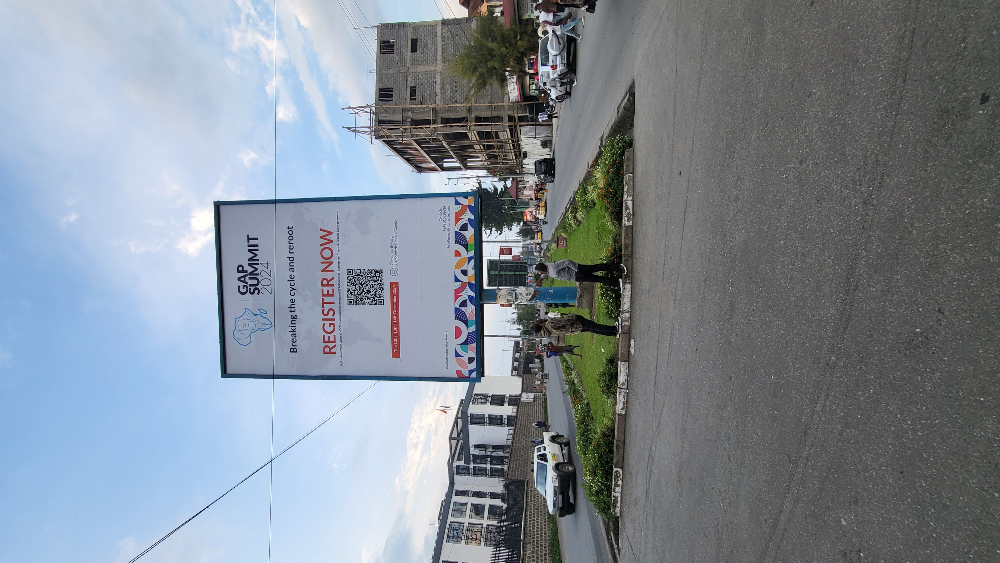

Ethical leadership
Rebuilding trust and legitimacy through accountable, service-oriented leadership.
The GAP Summit convenes youth leaders, NGOs, policymakers, and partners around courageous dialogue and practical alliances that can move from conversation to implementation.

Themes are designed to connect values, policy relevance, and tangible opportunity for action after the event.
Rebuilding trust and legitimacy through accountable, service-oriented leadership.
Conflict-sensitive leadership, civic trust, and peacebuilding pathways.
Skills, technology, and entrepreneurial readiness for a changing economy.
Inclusive systems, civic voice, and practical governance reform conversations.
Regional collaboration across institutions, sectors, and borders.
Humanitarian realities, social recovery, and local systems that hold communities together.
Big-picture perspective from respected voices in leadership and development.
Cross-sector discussion around urgent policy, peace, and youth questions.
Hands-on sessions focused on skills, frameworks, and action planning.
Focused partner conversations designed to deepen alignment and cooperation.
Space for youth-led ideas, practical solutions, and emerging initiatives to be seen.
Relationship-building that helps conversations turn into partnerships and next steps.
GAP uses the summit to convene people who do not always share the same room: youth leaders, community organizers, institutions, NGOs, and policymakers. That combination creates unusual energy and unusually practical outcomes.
Whether you want to participate, sponsor, speak, or build around the summit, GAP can create the right engagement pathway for your goals.